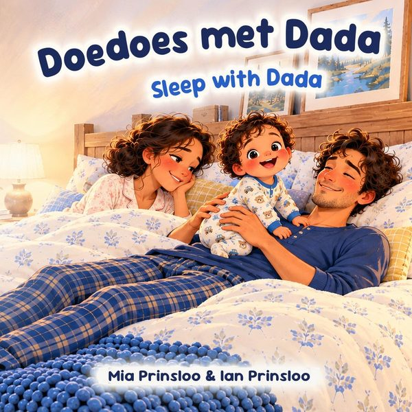
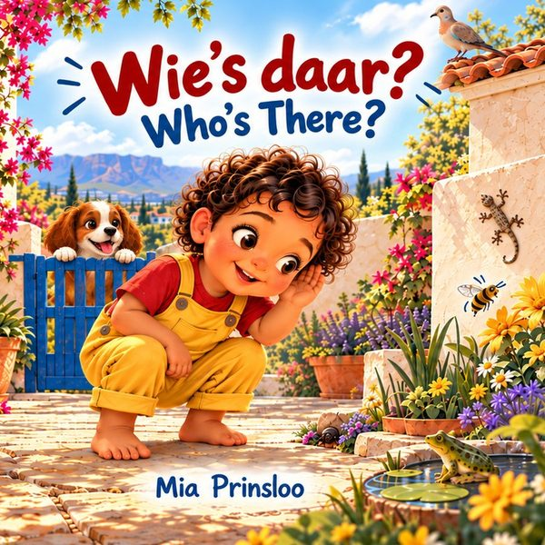
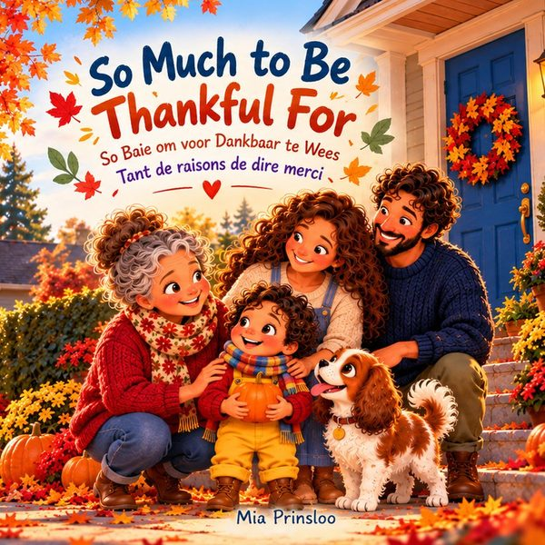

Milo's Adventures
Gentle stories about Milo, his family and Dog. Every book is in English and Afrikaans (and sometimes French too).

Ages 0–4Doedoes met Dada / Sleep with Dada
Afrikaans first, with English underneath
Mama is exhausted, so tonight it’s Dada’s turn. In the bed, in the rocking chair, on the couch and on the rug... left, right, on top, underneath and even upside down! Dada tries everything, but Milo is having far too much fun to sleep. A warm, funny bedtime story about a loving Dada and his wide-awake little boy.
Mama is doodmoeg, so vanaand is dit Dada se beurt. In die bed, in die wiegstoel, op die rusbank en op die mat... links, regs, bo-op, onder en selfs onderstebo! Dada probeer álles, maar Milo het net te veel pret om te slaap. ’n Warm, snaakse slaaptydstorie oor ’n liewe Dada en sy wawyd wakker babatjie.
Find it on Amazon (opens in a new tab)Look inside



Ages 0–5Wie's daar? / Who's There?
Afrikaans first, with English underneath
Listen closely... Who's there? From a tiny beetle to a noisy hadeda, discover all kinds of animals and their sounds in this playful bedtime story.
Luister mooi... Wie's daar? Van 'n piepklein toktokkie tot 'n raserige hadeda, ontdek allerhande diere en hulle geluide in hierdie vrolike slaaptydstorie.
Find it on Amazon (opens in a new tab)Look inside


First Snow! / Eerste Sneeu!
English, with a line of Afrikaans on every page
The first snow has fallen! Milo pulls on his boots and steps outside with Ouma and Dog. The snow is cold, soft and crunchy, and there is so much to discover! From tiny footprints to flying snowballs, Milo's first snowy day is full of little wonders. A gentle bilingual story about discovering the magic of snow for the very first time.
Die eerste sneeu het geval! Milo trek sy stewels aan en gaan saam met Ouma en Hondjie buitentoe. Die sneeu is koud, sag en krakerig, en daar is soveel om te ontdek! Van klein voetspore tot vlieënde sneeuballe is Milo se eerste sneeudag vol klein wondertjies. 'n Sagte tweetalige storie oor die wonder van sneeu vir die heel eerste keer.
Find it on Amazon (opens in a new tab)Look inside


Boo, Hoo, Rawr! / Boe, Hoe, Rawr!
English, with a line of Afrikaans on every page
It's Halloween night, and Milo is ready to ROAR! With Ouma and Dog beside him, he follows every strange sound through the neighbourhood. Scritch... scratch! Flap! Flap! Hoo-hoo! But what's hiding in the dark? A playful Halloween adventure about curiosity, courage, and one very brave little lion.
Dit is Halloweenaand, en Milo is reg om te BRUL! Met Ouma en Hondjie by hom, volg hy elke vreemde geluid deur die buurt. Krap... kras! Wapper! Wapper! Hoe-hoe! Maar wat skuil daar in die donker? 'n Speelse Halloween-avontuur oor nuuskierigheid, dapperheid en een baie dapper klein leeutjie.
Find it on Amazon (opens in a new tab)Look inside



Ages 1–5So Much to Be Thankful For
So Baie om voor Dankbaar te Wees · Tant de raisons de dire merci
It's Thanksgiving, and Milo is noticing all the little good things around him. Crunchy leaves, a round pumpkin, Dog's wagging tail, warm food, helping hands, and a big hug from Ouma: each one gives him something to be thankful for. A cosy autumn story about family, gratitude, and love all around.
Dis Danksegging, en Milo sien al die klein goeie dingetjies om hom raak. Knarsende blare, 'n ronde pampoen, Hondjie se swaaiende stert, warm kos, helpende hande en 'n groot drukkie van Ouma: elkeen gee hom iets om voor dankbaar te wees. 'n Knus herfsverhaal oor familie, dankbaarheid en liefde oral rondom.
Find it on Amazon (opens in a new tab)Look inside


Let's All Play Together / Kom speel almal saam
English first, with Afrikaans underneath
It's a sunny day, and Milo is off to the playground with Mom and Dad! Swings, sandpit, slide, seesaw, climbing frame, roundabout: at every one there's a new friend to play with, and their family too. Then it's splashing, a picnic and ice cream for everyone. Come and play together!
Dis 'n sonnige dag, en Milo gaan saam met Mamma en Pappa speelpark toe! Swaai, sandput, glyplank, wipplank, klimraam, mallemeule: by elkeen wag 'n nuwe maatjie om mee te speel, en hulle familie ook. Dan is dit tyd om in die waterpark te spat, piekniek te hou en roomys te eet. Kom ons speel almal saam!
Find it on Amazon (opens in a new tab)Look inside


Snowy Christmas, Sunny Christmas
Kersfees in die sneeu, Kersfees in die son
Snowy Christmas here. Sunny Christmas there. Milo celebrates with Mom, Dad and Dog, while far away Ouma and family celebrate too. Christmas may look different on the outside, but inside it is full of the same things: warmth, laughter, cuddles and love.
Kersfees in die sneeu hier. Kersfees in die son daar. Milo vier saam met Mamma, Pappa en Hondjie, terwyl Ouma en familie ver weg ook feesvier. Kersfees lyk dalk anders van buite, maar binne is dit vol van dieselfde dinge: warmte, lag, drukkies en liefde.
Find it on Amazon (opens in a new tab)Look inside


Up, Up, Away! / Hoog in die lug!
English first, with Afrikaans underneath
Milo is going on his first big aeroplane adventure! He packs Teddy, watches the busy airport, and climbs aboard a great big aeroplane. Up through the clouds they go, higher and higher. There is so much to see, and someone very special is waiting at the end of the journey.
Milo gaan op sy eerste groot vliegtuigavontuur! Hy pak vir Teddy, kyk na die besige lughawe en klim aan boord van 'n groot vliegtuig. Hoog deur die wolke vlieg hulle, hoër en hoër. Daar is soveel om te sien, en iemand baie spesiaal wag aan die einde van die reis.
Find it on Amazon (opens in a new tab)Look inside


 Ages 2–6
Ages 2–6
Out on the Water / Op die Water
English first, with Afrikaans underneath
Come out on the water with Milo! He discovers boats big and small: Dad's little racing dinghy, a tiny round ferry to the market with Mom, and the biggest ferry of all, out between green islands. And who lives on the water? Seals, gulls, dolphins... and WHALES!
Kom saam met Milo op die water! Hy ontdek bote groot en klein: Pappa se klein resiesbootjie, 'n klein, ronde veerboot mark toe saam met Mamma, en die grootste veerboot van almal, tussen groen eilande. En wie woon op die water? Robbe, seemeeue, dolfyne... en WALVISSE!
Find it on Amazon (opens in a new tab)Look inside


All the books are paperbacks. Each button opens Books2Read in a new tab, which takes you to your own country's Amazon. It may say "Ebook" and show a Kindle button: tap it and it opens the paperback.